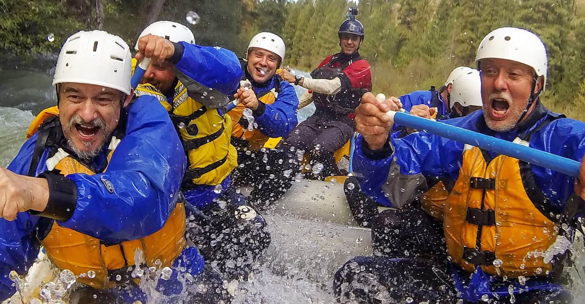

At Summit Rafting Co., our mission is to create extraordinary white water rafting experiences that combine the thrill of adventure with the serenity of nature. We are dedicated to providing the highest standards of safety and professionalism while guiding our guests through some of the most breathtaking and remote river landscapes. More than just an outdoor activity, we believe rafting is a transformative journey—one that fosters teamwork, builds lasting memories, and inspires a deep appreciation for the natural world. Whether you're seeking adrenaline, connection, or simply an escape from the everyday, Summit Rafting Co. is committed to delivering adventures that elevate the spirit and celebrate the wild.

Summit Rafting Co.
History
Summit Rafting Co. was founded in the rugged river canyons of the American West. Starting as a small team of local guides, we’ve grown into a leading adventure company known for unforgettable rafting experiences and a deep respect for nature..